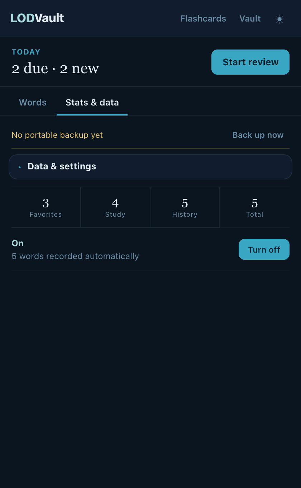
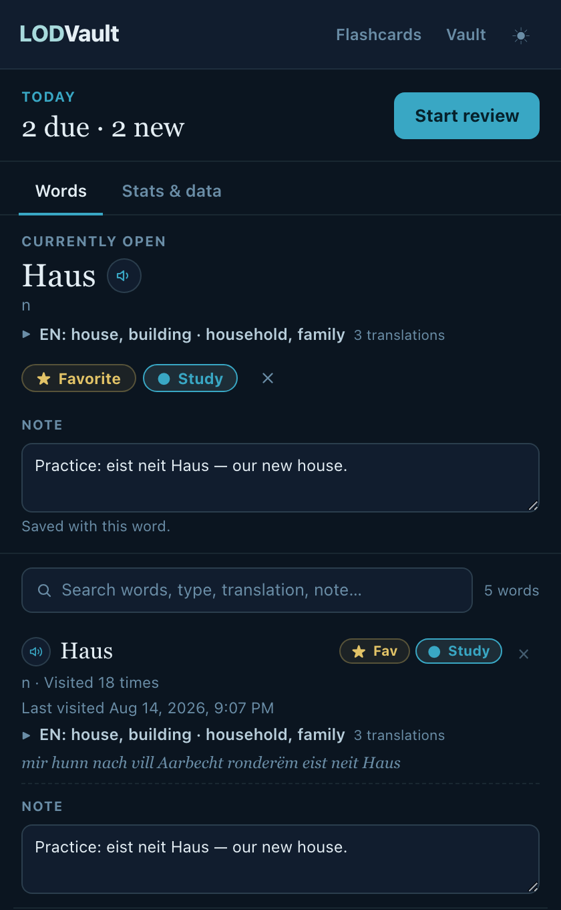

LODVault
Your vocabulary, close at hand
Save the word.
Keep the context.
Capture Luxembourgish from lod.lu, then search, organize, and revisit it without breaking your flow.
Local-first · Sync-ready · Export anytime

